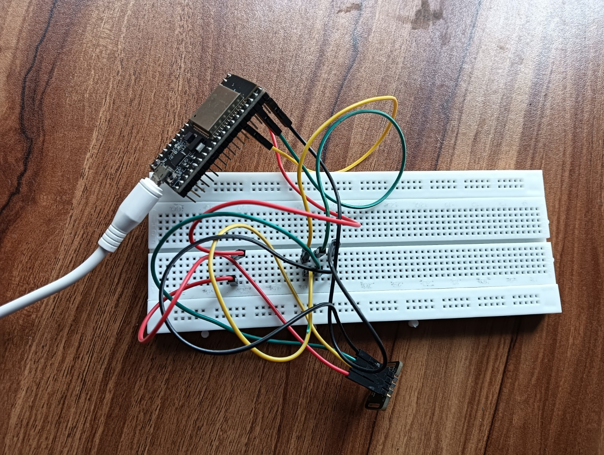

OsteoSense is a student-built prototype designed to explore knee-mounted sensing, local wireless data transfer, on-device/mobile data storage and AI-assisted comparison of measured signals with reference data. The system is designed to support early-risk assessment and health monitoring while keeping the core data-transfer path usable without internet access.
Knee sensor → ESP32 → local Wi-Fi → phone storage → AI comparison → app feedback
Why the project focuses on accessible, connected monitoring concepts.
Osteoarthritis is a common joint condition involving changes in joint tissues. Detecting and monitoring changes earlier is an important area of research.
IoT systems can connect sensors and embedded devices to software platforms so that measurements can be collected and viewed remotely.
OsteoSense demonstrates an end-to-end prototype in which signals are collected at the knee, transferred wirelessly to a phone, stored locally with permission, and analysed against reference data.
OsteoSense follows a local-first sensing and analysis workflow so the core measurement process does not depend on an internet connection.
The sensing module is positioned on the knee area for the measurement session.
The sensor captures the signals required by the prototype's programmed measurement process.
Collected measurements can be held temporarily by the embedded system before wireless transfer.
The device sends data directly to a nearby phone over Wi-Fi. The core transfer path does not require internet access.
With the appropriate app permission, measurements can be stored in the phone's local storage. Cloud storage can remain optional.
The software can compare processed measurements with a reference dataset representing healthy-person measurements.
Core technologies used in the current prototype.
| Component / Technology | Role |
|---|---|
| ESP32 | Microcontroller, sensor interface and Wi-Fi connectivity. |
| MAX30102 sensor module | Optical sensing module used in the prototype for physiological signal acquisition. |
| Breadboard & jumper wires | Temporary prototyping and electrical connections. |
| Arduino IDE | Programming and uploading firmware to the ESP32. |
| Phone Local Storage | Primary storage option for collected measurements, helping the prototype operate without internet access. |
| Optional Cloud Storage | Can be added for backup, synchronization or remote access when internet connectivity is available. |
| HTML / CSS / JavaScript | Web interface and dashboard development. |
| GitHub | Project source-code hosting and deployment workflow. |
The proposed OsteoSense workflow from knee measurement to user feedback.
Local-first design: The proposed measurement and transfer path is intended to work over a nearby Wi-Fi connection without requiring internet access. Optional cloud synchronization can be added when internet is available.
These are the output labels currently used in the OsteoSense prototype/dashboard.
Project output representing the prototype's calculated HPF-related degradation value.
Project output representing the prototype's calculated hypervascularization-related value.
A combined project index intended to summarize the prototype's processed output.
Important: These prototype outputs should not be presented as clinically validated diagnostic results. Clinical interpretation and validation would require appropriate biomedical research, testing and professional evaluation.
Software can compare processed measurements with reference data and present the results in an understandable form.
The AI layer can compare the user's processed measurements with an appropriate reference dataset representing healthy individuals.
The application can present a prototype risk or trend assessment based on the project's defined algorithm and comparison results.
The future application may provide general nutrition, dietary and lifestyle information based on the user's results.
Medication decisions should remain under the supervision of a qualified healthcare professional. The prototype should not independently prescribe pharmaceutical treatment.
Repeated measurements can be used to visualize trends and support longer-term monitoring within the limits of the validated system.
The long-term project objective is to support earlier awareness and healthier intervention pathways that may help reduce progression risk, subject to clinical validation.
Medical safety note: OsteoSense is a prototype and should not be described as a clinically validated diagnostic, prognosis or prescribing system unless and until appropriate clinical studies and regulatory requirements have been completed. AI outputs should be treated as decision-support information for research and demonstration purposes.
Actual hardware assembled by the Blue Code Crew.

The current prototype uses an ESP32 development board, sensor module, breadboard and jumper-wire connections. The ESP32 forms the bridge between the sensing hardware and the internet-connected software system.
This photograph shows the physical prototype used during development.
From embedded code to the online dashboard.
ESP32 firmware handles sensor communication, data processing and Wi-Fi communication.
The phone receives measurements over local Wi-Fi and stores them locally with user permission. Cloud synchronization is optional.
The application processes and compares data with reference measurements, then presents outputs, trends and general health guidance.
Possible directions for further development.
Improve filtering, feature extraction and signal-processing methods.
Conduct structured experiments and compare prototype outputs with appropriate reference measurements.
Develop a compact, reliable enclosure and a more refined sensor interface.
Build a dedicated phone application for local Wi-Fi transfer, permission-based storage and offline viewing.
Train and validate comparison models using appropriately collected and ethically governed datasets.
Add historical graphs and trends for repeated measurements.
Explore additional sensing approaches and scientifically validated biomarkers or measurements.
Team members behind the OsteoSense project.
College, department, mentor and live dashboard information can be added here.
Institution: To be added
Department: To be added
Project Guide: To be added